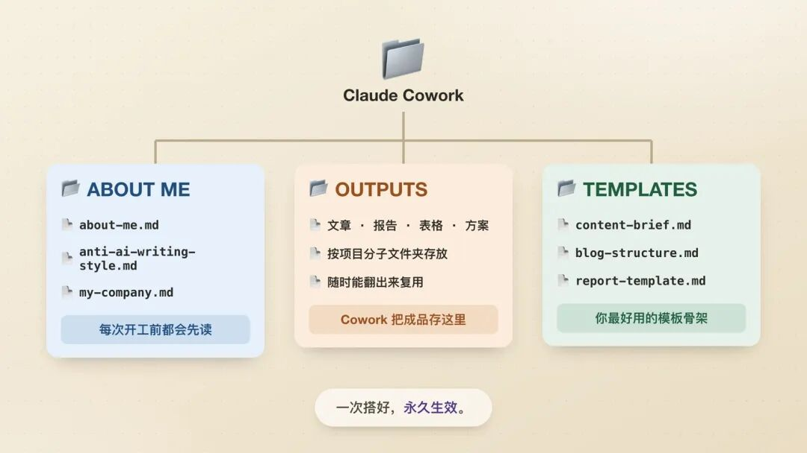
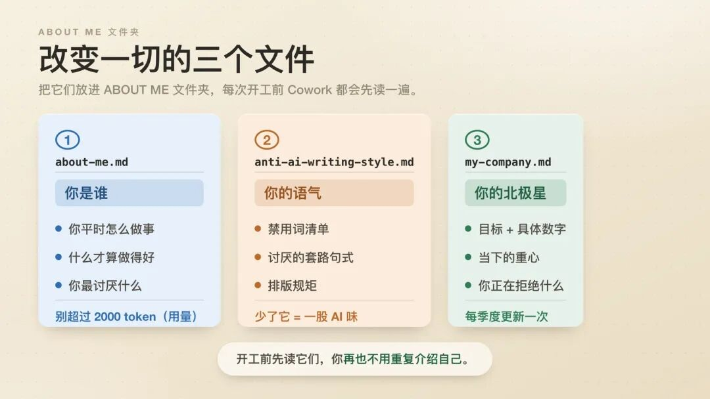
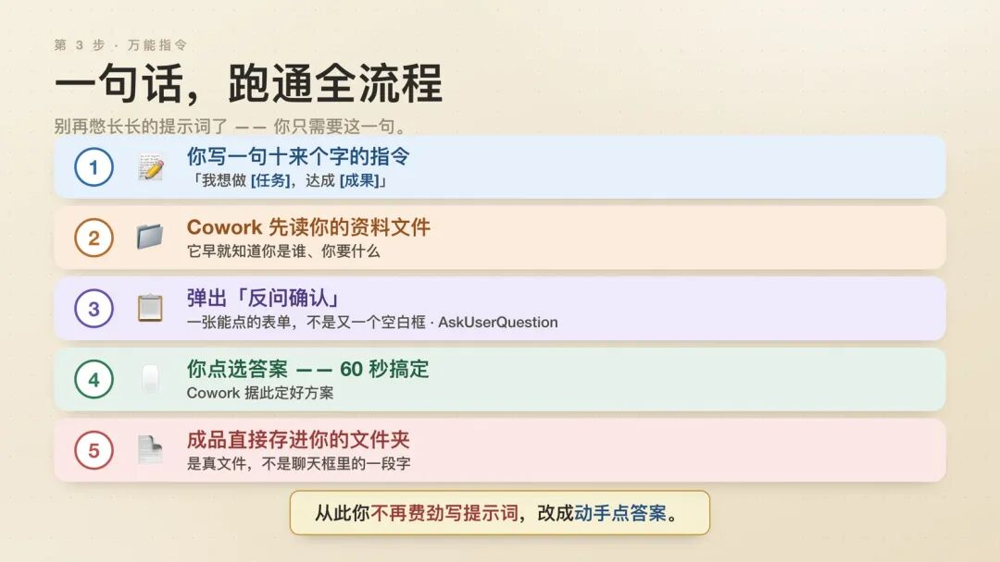
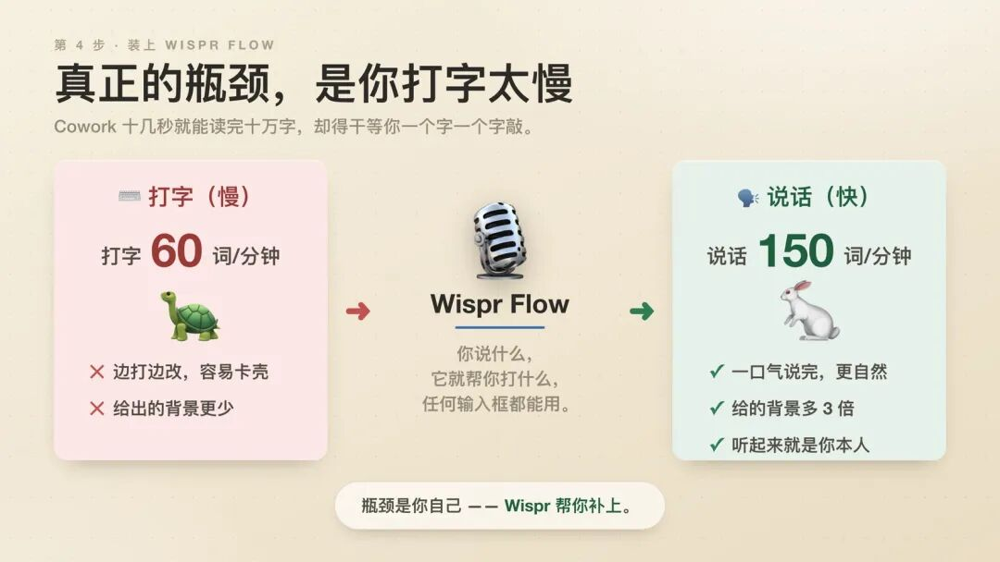
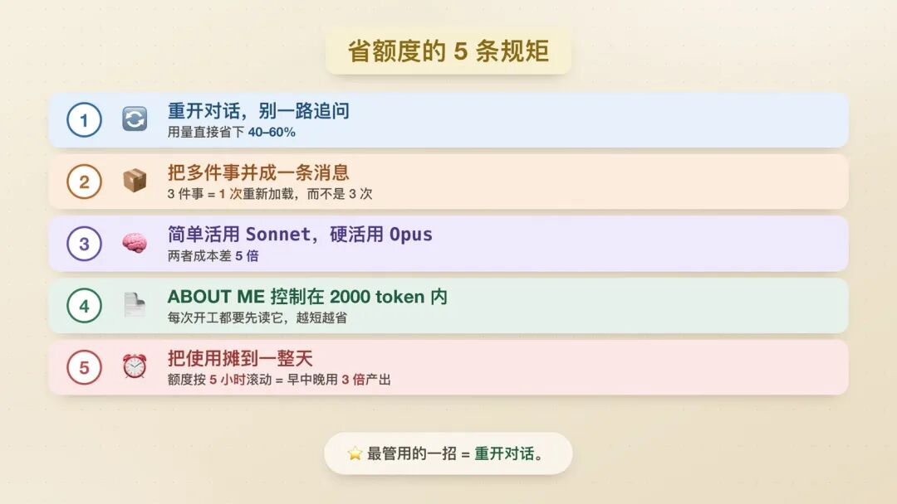
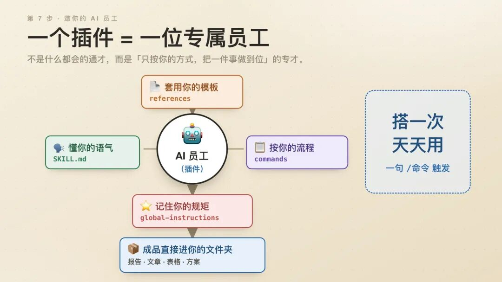
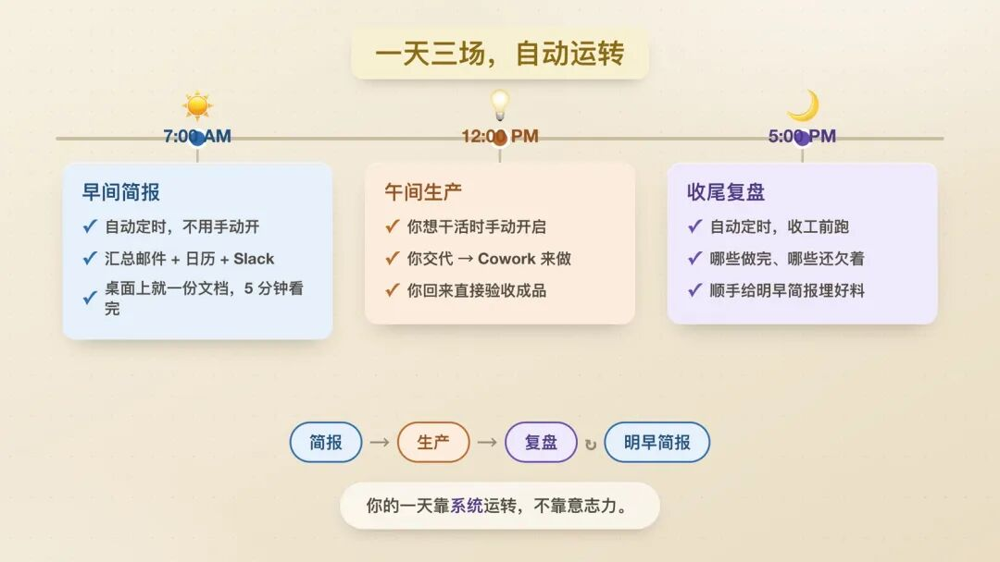

回邮件。排版。汇总报告。做 PPT。整理文件。查资料。做营销。写文案。搞 SEO（想办法让你的东西在搜索里排到前面）。
靠脑子吃饭的普通人，一天有 60% 的时间都耗在上面这些事上——这些活根本用不着动脑子。
这些活是得有人干。但不是只有你才能干的活。
Claude Cowork（一个像同事一样替你干活的 AI）能改变这一点。
它不是让你把这些活干得更快。
而是干脆把你从这些活里彻底拎出来。
下面就是我经营一人公司的整套办法：具体活儿全交给 Cowork，我只负责做决定。
收藏起来。你每周都用得上。
Cowork 到底是个什么东西
大多数人以为 Claude 就是个聊天机器人。
你打开它。你打字。它回话。你把它给的文字复制到别处。你关掉网页。
那是 Claude Chat（聊天版）。它挺好用。但它不是 Cowork。
Claude Cowork 是完全另一个东西。
它是装在你电脑上的软件。它能读、能改你电脑里真实的文件。它能给你生成真正的 Word 文档、Excel 表格。它能同时处理那种要好几步才能干完的活，让你腾出手去干别的。它动手之前会先问你问题——而不是自己瞎猜，然后猜错。
换个脑子想：
Claude Chat 是一场对话。Cowork 是一个同事。
一个只给你一段文字，让你自己粘到别处去。另一个是把活干完，还把文件存到该存的地方。
5 分钟上手
别的先不管——先装上。
→ 打开 claude.com/download
→ 下载桌面版应用（Mac 或 Windows 都行）
→ 你得是付费用户——最低 $20 美元/月。我用的是 $100/月那档 :)
→ 打开这个软件
→ 点顶部的「Cowork」标签（就在 Chat 和 Code 中间）
→ 从你电脑里选一个文件夹
→ 遇到复杂任务，切换到 Opus 4.6 模型（Opus 是 Claude 里最聪明、也最费额度的一档，专门留给难活；查错别字、随手一问这种简单活，用便宜 5 倍的 Sonnet 就够了）
那个文件夹，就是全部的关键。
Cowork 会读它。往里写东西。在里面整理归类。
你的文件夹准备得越好——它干出来的活就越好。
第 1 步——搭好文件夹
大多数人打开 Cowork，敲一句提示词（就是你给 AI 下的一句指令），结果拿到一堆千篇一律的东西。
原因：Cowork 根本不知道你是谁。
这事一次搞定，往后再也不用管。
在你电脑上建一个文件夹，叫「Claude Cowork」。
里面再建 3 个子文件夹：
→ ABOUT ME（「关于我」）
→ OUTPUTS（「成品」）
→ TEMPLATES（「模板」）

三个能改变一切的文件
ABOUT ME 文件夹，是你在 Cowork 里能布置的最重要的一样东西。
这些文件，每次开工一开始都会被读一遍。
有了它们，你再也不用一遍遍地跟它介绍自己。
文件 1——about-me.md（markdown 文件，就是一种最朴素的纯文本文档，用记事本就能打开，.md 就是它的后缀名）
你是谁。你怎么想事。在你眼里什么才算好活。
别自己动手写。
让 Cowork 来采访你。它会用一个叫 AskUserQuestion（反问确认）的功能——一条条弹出问题让你点选，而不是让你对着空白框硬写。
新开一个 Cowork 会话，把下面这段粘进去：
你来帮我建 Cowork 文件夹里的 about-me.md 文件。
用 AskUserQuestion 采访我——一次只问一个问题。
总共问 20 个。我要是答得含糊，你就追问。
要问到这些：
- 我是做什么的、跟谁打交道
- 我接到一件事怎么开头，什么才算「干完了」
- 在我这行，什么样的活才叫好活
- 我最烦什么（套路、偷工减料、AI 腔）
- 我的铁规矩、绝不让步的底线
采访完：把所有内容整理成一个
markdown 文件，控制在 2,000 token 以内。
别把一问一答的原文照抄进去，提炼出规律。
用精炼的短句加要点来写。
存成 about-me.md，放进我的 ABOUT ME/ 文件夹。回答问题时，用嘴说，别用手打。
用 Wispr Flow（一款说话就能变文字的工具，或者随便哪个免费的语音输入工具都行，连苹果 Mac 都自带一个）。按住一个键。开口说。松手。文字就出来了。
说话时给出的背景信息（就是 AI 干活时要依据的东西：你是谁、想要什么），比打字多出 3 倍。背景越足，Cowork 干出来的活就越好。每次都是这样。
这个文件要控制在 2,000 token（token 是衡量 AI 读写了多少字的用量单位，就像话费，用完就没了）以内。
这个教训我是吃过亏才懂的。我最早那个 about-me 文件有 22,000 多 token。结果 Cowork 每次开工大半时间都在读我的档案——真正的活反倒没干几件。
我把它砍到 2,000 以内。质量一样。浪费少了 10 倍。
文件 2——anti-ai-writing-style.md（反 AI 腔清单）
你烦 AI 写的东西。我也烦。
赋能。抓手。打造闭环。在当今快节奏的世界。
这个文件，就是一张清单，列出 Cowork 替你写东西时绝对不许犯的毛病。
我那份禁掉了 80 多个词。掐死了一些特定的句式。规定每段最多 3 行。
没这个文件：Cowork 写出来一股 AI 味。有这个文件：Cowork 写出来像你本人。
一开始简单点就行。以后每次在 Cowork 的产出里看到你讨厌的东西，就往里加一条。
文件 3——my-company.md（我的事业说明）
你的目标。你的策略。你眼下在专注什么。你在拒绝什么。
不是这周二那个截止日。是你真正的长期方向（北极星目标）。
在做完 about-me 采访的那个 Cowork 会话里，接着把下面这段粘进去：
你来帮我建 my-company.md 文件。
这个文件告诉 Claude 我在往哪个方向使劲，
让它每次干活都能做出更好的判断。
用 AskUserQuestion 采访我——问 6 到 8 个问题。
要问到这些：
- 我今年最重要的 2、3 个目标（要具体数字）
- 眼下哪些平台、哪些市场对我最要紧
- 我正在主动推掉、拒绝的是什么
- 这个季度我的时间大头花在哪
采访完：整理成一个 markdown 文件，
控制在 1,000 token 以内。用要点。别写废话。
存成 my-company.md，放进我的 ABOUT ME/ 文件夹。只有当你的策略真的变了，才去更新这个文件。
大概一个季度一次。

第 2 步——设好全局指令
光有文件夹还不够。
Cowork 还得知道该怎么用它。
打开：设置 → Cowork → 编辑全局指令（Global Instructions，就是写一次、之后每次开工都自动生效的固定要求）
把下面这段粘进去（把文件说明改成你自己的）：
每次干活前，先把 ABOUT ME/ 里的每个文件都读一遍：
- about-me.md：[我是谁、我的标准、我怎么做事]
- anti-ai-writing-style.md：[我的写作规矩、禁用词]
- my-company.md：[我的目标、策略、当下重点]
除非我明确指到某个文件，否则绝不去读 OUTPUTS/ 或 TEMPLATES/。
所有成品都存进 OUTPUTS/，并按项目名建一个子文件夹放好。
要求说不清楚时，用 AskUserQuestion 反问我。
别拿废话来填空。
别过度解释。
把活干出来交给我。这个你只设一次。
之后每一次 Cowork 开工前，它都会先跑一遍。
永远如此。
所以你才能只敲十来个字的指令，就拿到一份听着像你亲手写的东西。
因为背景资料早就装好了。
第 3 步——一句话搞定一切的万能指令
别再写又臭又长的指令了。
你只需要这一句：
我想要[任务]，好让[算成功的标准]。
先读我的 ABOUT ME 文件夹。
然后动手之前，用 AskUserQuestion 跟我确认清楚。就这么简单。
Cowork 读你的背景文件。问你几个到位的问题。你点选答案（花 60 秒）。Cowork 列出一份计划。你点头。它就把实实在在的文件生成到你的 OUTPUTS 文件夹里。
整个过程，感觉就像在给一个聪明的员工交代活儿，而不是对着一个输入框绞尽脑汁憋提示词。

一个没人讲明白的功能
AskUserQuestion（反问确认）。
就是这个东西，改变了我干活的方式。
别的 AI 工具，一遇到你说不清楚的地方，就自己瞎猜。
它挑一种理解。埋头就干。最后给你一份看着漂亮、却答错了问题的东西。
Cowork 不一样。
它一旦需要更多信息——就停下来。
它给你弹出一张表单。一个个能点的选项。能多选的选项。还有能拖着排序的排名。
这下反过来了，是 AI 在向你提问。
你不用再对着一个空白框，硬憋一句完美的提示词。
你只要花 60 秒点完一张表单。
但凡不是小事的指令，都记得加上这一句：
动手之前，先用 AskUserQuestion 跟我确认。我在 Mac 上设了个文字快捷替换：我一打「/prompt」，它就自动展开成我那整套模板。
设置 → 键盘 → 文字替换 → 添加 /prompt → 把整套模板粘进去。
一个快捷键。随时待命。
第 4 步——装上 Wispr Flow
这是个没人提、但卡脖子的地方。
Cowork 能在 15 秒内读完 10 万字。能在 90 秒内做出一张表格。
然后它就得干等着你，以每分钟 60 词的速度敲字。
而你开口说话，是每分钟 150 词。
装上 Wispr Flow。
→ 打开 wispr.ai（或随便哪个免费的语音转文字工具）→ 下载 → 安装
→ 挑一个快捷键（我用 Shift）
→ 按住这个键。开口说。松手。文字就出现在你屏幕上任何地方。
包括 Cowork 的聊天框里。
这样一来，你不用再打「我要一篇领英帖子」，而是直接开口说：
「我最近发现了一件事 X，我想多聊聊 Y，不过我想先把 Z 说清楚，所以也许咱们该从……开始」
嘴说出来的背景信息，比打字打出来的丰富 3 倍。
背景越足，产出越好。
每次都是。

第 5 步——省额度，就是省钱
要是你每天都用 Cowork，$20/月那档很快就用光。
下面教你怎么把每一点额度都花在刀刃上。
最大的窍门：重开对话。
你每追加一条消息，都比上一条更费额度。
第 1 条消息，重读背景只花 1 份额度（1 份额度大约就是 500 token）。到第 30 条，就得花 31 倍。
按每来回一次 500 token 算——20 条消息就烧掉 10 万 5 千 token。
Cowork 哪里做错了——别去打「不对，我的意思是……」
退回到更靠前的地方重开对话。用一份更好的说明，从头来过。
光这一个习惯，就能把你的 token 用量砍掉 40% 到 60%。
再给你 5 条规矩：
→ 把任务攒一块儿干。分 3 次下指令 = 背景资料重读 3 遍。一次下指令带 3 件事 = 只重读 1 遍。
→ 简单活用 Sonnet。检查错别字、排版、随手一问，都用它。Opus 留着干重活。Sonnet 便宜 5 倍。
→ ABOUT ME 里的文件别太大。每次开工都要先读它们。22,000 token → 真正的活还没开始就先烧掉一堆预算。2,000 token → 省。
→ 每 20 条消息就重开一次。让 Cowork 把这次会话总结一下。复制下来。新开一个会话。把总结当第一条消息粘进去。背景还是那些背景。但不臃肿了。
→ 把用量摊到一整天。Claude 是按「最近 5 小时」这段不断往前挪的时间来算你用了多少的；这 5 小时里用得太猛，就会提前把一天的额度花光。上午 + 下午 + 晚上分着用 = 相当于 3 倍的量。

第 6 步——模板文件夹
每次 Cowork 做出一样你满意的东西——就把它存成模板。
在会话结束时，只要说这么一句：
把这个存成模板，放进 TEMPLATES/。
把里面的具体内容去掉，只留骨架结构。Cowork 会把具体内容去掉，只留骨架——有哪几个部分、顺序、格式、长度——然后存起来。
下次你要做类似的东西时：
照着 TEMPLATES/[文件名] 这个模板来做。TEMPLATES 文件夹会自己越攒越满。
你不用整理它。你不用维护它。
你只要在需要的时候，指一下用哪个文件就行。
时间一长，这个文件夹会变成你最值钱的家当。
每一个奏效过的结构。每一种打动过人的格式。每一份你客户喜欢过的成品。
随时能拿来复用。
第 7 步——造一个你的 AI 员工
到这一步，Cowork 就从一个工具，升级成了你事业的基础设施。
所谓 Cowork 插件（plugin，就是装上就能让 Claude 当某行专家用的功能包），其实就是一个按特定结构摆好的文件夹，能把 Claude 变成一个专才。
不是那种啥都会一点的万金油。
而是一个专才，专干一件事，而且完全照着你的路子干。
你的内容策划。你的调研分析员。你的客户报告撰稿人。
文件夹的结构是这样：
my-plugin/
├── .claude-plugin/
│ └── plugin.json ← 名字和角色定位
├── skills/
│ └── SKILL.md ← 一步步的工作流程
├── commands/
│ └── run.md ← 斜杠指令
├── references/
│ └── templates.md ← 你最好的范例
└── global-instructions.md ← 固定要求SKILL.md 就是这个插件的大脑。
每一个步骤。每一条规矩。每一道质检。
你写得越具体——它干出来的活就越好。
不是「分析一下数据」。
而是「拿这周跟上周比。算出每个指标的百分比变化。凡是波动超过 20% 的都标出来。用一句话写出结论」。
举个插件的例子：一个每周写内容的助手
# SKILL.md
## 流程
1. 读 about-me.md，装载我的语气风格和受众
2. 读 anti-ai-writing-style.md——这些规矩一条都不能破
3. 从 INPUTS/ 里读这次的内容要求
4. 用联网搜索研究这个话题（至少 3 个来源）
5. 用「3 秒刷不走」的标准写一个开头钩子
6. 正文分段来写，每段不超过 100 词
7. 结尾放一个明确的行动号召，跟 my-company.md 里我当下的目标挂钩
8. 存档前先过一遍质量清单
## 规矩
- 除非我要求，否则绝不用要点列表
- 每段最多 3 行
- 不许出现 AI 腔词（见 anti-ai-writing-style.md）
- 钩子的第一句必须抛出一个大胆的论断
## 质量清单
- [ ] 开头钩子能在 3 秒内让人刷不走
- [ ] 没有禁用词、禁用句式
- [ ] 行动号召对得上当下的目标
- [ ] 读起来像真人写的造好之后——用这条斜杠指令（打个斜杠加个词就能触发某个功能）来触发它：
/content:write一条指令。整套专才流程跑完。成品存进你的 OUTPUTS 文件夹。

第 8 步——把你的一整天自动化
这就是终极形态了。
3 个定时任务。不用手动触发。你的一天自己就转起来了。
早上 7 点——晨间简报
在你打起精神打开笔记本之前：
Cowork 早已把你的邮件扫了一遍，按紧急程度分好了类。给那些例行邮件都拟好了回复。把真正需要你动脑的那 3 封挑了出来。拉出了你的日历。给每个会都写好了准备提要。
一份文档，就摆在你桌面上。
你花 5 分钟读完。这一天该怎么过，你心里门儿清。
在 Cowork 里用 /schedule 把它设成一个反复执行的定时任务。
中午 12 点——午间生产
等你准备好干正事时，手动触发。
你把下午要干的 3 到 5 件事，跟 Cowork 交代一遍。
Cowork 埋头去干，你则专心去做那些只有你才能处理的决策和人际关系。
等你回来，文件都做好了。
下午 5 点——收尾复盘
在你合上笔记本之前：
Cowork 把今天发生的事捋一遍。哪些办完了。哪些还悬着。哪些要挪到明天。
一份文档，给今天画个句号。
而它又成了明天早上那份简报的背景资料。
一环扣一环。中间不断档。
/schedule：每个工作日早上 7 点
读我的邮件（Gmail 连接器）、日历（Google Calendar 连接器）、
还有 Slack（Slack 连接器）。
给邮件分等级：
- 第 1 级：早上 9 点前必须回
- 第 2 级：今天之内必须回
- 第 3 级：这周内回都行
- 第 4 级：只是通知，不用回
把第 3 级和第 4 级的邮件回复都先草拟好。
第 1 级和第 2 级标出来，等我过目。
拉出今天的日历。给每个会议写 3 句话的准备提要。
把所有内容整理成 Morning-Briefing-[日期].md
存到 /OUTPUTS/daily-briefings/设好它。往后再也不用去想它。

还有些别的招，让你的日常更顺手
插件（Plugins）
十个字说清：一装上就让 Claude 秒变某行专家的现成功能包。
它们为什么重要
没有插件时，Claude Cowork 是个很厉害的万金油。它会写、会查、会分析、会整理、会搭建。但它不懂你这行的行话，不懂你团队的干活流程，也不懂你这个岗位到底要交出什么样的成品。
插件把这些都补上了。它们是一整套技能、斜杠指令和小助手的打包，专门为某类岗位设计。Anthropic（做 Claude 的公司）在 2026 年 1 月一口气推出了 11 个官方插件：
• 效率（Productivity）——任务管理、日历、日常事务流程 • 营销（Marketing）——写内容、策划活动、统一品牌口吻 • 销售（Sales）——摸底客户、准备通话、对外联络、竞品应对话术 • 财务（Finance）——财务建模、分析、做报表 • 数据分析（Data Analysis）——写 SQL（一种专门向数据库要数据的命令）查数据、做看板（把数据做成一眼能看懂的图表面板）、翻查数据集 • 法务（Legal）——审合同、做检索、起草文件 • 产品管理（Product Management）——写需求文档、排产品规划、写用户故事 • 客服（Customer Support）——处理工单、拟回复 • 企业搜索（Enterprise Search）——在你连接的各种工具里统一搜索 • 生物研究（Biology Research）——查科研文献和数据 • 还有更多正在陆续加进来
冲击来得很快。法务插件一上线，汤森路透（Thomson Reuters，一家法律信息巨头）的股价一个交易日就跌了 16%——创下有记录以来最惨的一天。LegalZoom（美国最大的在线法律服务网站）跌了 20%。当 AI 真的开始能干专业活的时候，就是这副光景。
装上销售插件，Claude 就能帮你摸底客户、为通话做准备、拟好一整套对外联络的话术。装上数据插件，它就能翻你的数据集、写 SQL、做看板、把异常数据挑出来。你不用懂技术。你只要点一下「安装」。
怎么装插件
1. 打开 Claude Cowork。 2. 点聊天栏里的「+」按钮，再点「Plugins（插件）」，就能翻看整个插件库。 3. 想看看都有哪些，也可以直接去 claude.com/plugins。 4. 挑一个对得上你岗位的插件，点「安装」。 5. 在任意 Cowork 聊天里打一个「/」，就能看到这个插件新增的斜杠指令。
你的头几条指令（装完之后）
装完效率插件之后：
/productivity:start 咱们来过一遍我今天要完成的事，把任务清单列出来。
装完营销插件之后：
/marketing:draft-content 写一篇关于[话题]的领英帖子。口吻照我 brand-voice.md 文件里的来。面向[受众]。目标：[我想让读者去做什么]。
装完数据插件之后：
/data:explore 我往这个文件夹里传了一个 CSV 文件（就是一种表格数据文件）。给我总结一下里面都有什么，把异常的地方挑出来，再建议三个值得做的分析。
开着插件时干出来的活，明显比随手一句指令更有条理、更有主见。它知道在你这个岗位上，什么才算一份好成品。
连接器（Connectors）
十个字说清：跟 Slack、Google Drive、Notion 等 50 多种工具的实时打通。
它们为什么重要
一般用 AI 的流程，全是复制粘贴。你把 Slack 里的对话截个图。你把文档复制下来。你粘进聊天框。你再手动补上背景。累死人。
连接器把这些全省了。工具连一次，之后聊着聊着，Claude 就能直接调用里面的实时内容。不用复制粘贴。不用截图。不用下载。
你让 Cowork「把 #project-alpha 频道过去两周里的关键决定总结一下」，它就去读你的 Slack。你让它「从 Drive 里那份营收文档里把第一季度的数字拉出来」，它就打开你的 Google 文档。你让它「把 Notion 里所有标成『卡点』的东西找出来」，它就去你的工作区里搜。
这个功能所有套餐都免费。据我看，它是 Cowork 里最被埋没、最少人用的功能。
怎么连接你的工具
1. 在 Claude 桌面版里，打开 设置 > 连接器（Connectors）。 2. 翻一翻目录（50 多种可连的工具，包括 Slack、Google Drive、Notion、Figma、Asana 等等）。 3. 点一个连接器，按「添加」。 4. 用那个工具登录授权一下。搞定。
这个你只做一次。之后每次 Cowork 开工，Claude 都能直接读到那个工具里的实时内容。
你的第一条指令（连好 Slack 之后）
翻一遍我过去 7 天的 Slack 消息，把所有我需要跟进的事总结给我。按紧急程度排好。
或者连好 Google Drive 之后：
在我的 Drive 里找到关于[项目名]的最新一份文档。读完它，告诉我最重要的三件我该知道的事。
我平时真实的用法
下面就是我每周实实在在怎么用 Cowork 的。
写这种文章：
文件夹里放着：about-me.md、anti-ai-writing-style.md、以前反响好的文章、参考资料。
指令：「我想写[话题]。读一遍我的文件夹。先问我几个问题。」
然后：Cowork 把每个文件都读一遍。问我受众是谁、切入角度、别的攻略漏了什么。我点选答案。它给出一份提纲。我提反对意见。它跟着调整。因为我的语气档案早装好了，它就用我的口吻把初稿写出来。
我再改一改。但最费劲的活已经干完了。
给客户交付的东西：
把客户的需求说明扔进文件夹，就放在我的模板和过往作品旁边。
指令：「读一下 /projects/client-x 里的需求说明。跟我的模板对照。起草第一版，存成 .docx。先问我几个问题。」
然后：Cowork 读需求说明。跟我的格式对照。问一些我自己都没想到的问题。生成一份实实在在的 .docx 文件。打开就能用。
竞品调研：
把 3 到 5 篇竞争对手的文章扔进一个子文件夹。
指令：「把这 4 篇文章都读了。做一张对比表：每篇讲了什么、漏了什么、我能在哪儿说点新东西。」
这在以前，是招个新人来干的活。
现在，一句指令的事。
自己就会跑的每周简报：
设成每周一早上 7 点自动执行。
Cowork 把我正盯着的东西都查一遍。把总结存到我的简报文件夹里。
我一睁眼就有一份文档等着我。我什么都没干。
Cowork 也有短板
我答应过要说实话。
→ 会话之间没有记忆：每次开工都是从头来。补救办法：把背景都存在 ABOUT ME 文件里。全局指令设扎实。这招挺管用，但碰上长线项目，你还是会感觉到那道坎。
→ 用量掉得快：复杂任务烧额度很凶。用 $20 那档，重度使用一周你就有感觉。要是 Cowork 成了你的主力工具，就考虑上 $100 那档。
→ 只有桌面版：没有手机版。没有网页版。任务跑的时候，软件必须一直开着。你一关——这次会话就没了。
→ 别拿它问小问题：想问「法国首都是哪」，用 Chat。Cowork 是用来干活的，不是用来查冷知识的。
→ 发出去之前先自己看一遍：它目前还是个「研究预览版」。Anthropic 自己也把这话说得很明白。给客户的东西，没读过别直接发。90% 的时候都干得漂亮。剩下那 10%，能吓你一跳。
你的头 20 分钟
打开你的日历。这周划出 20 分钟。
第 0 到 5 分钟：装软件、搭文件夹
→ claude.com/download
→ 下载 → 登录 → 开付费套餐
→ 在你电脑上建一个 Claude Cowork 文件夹
→ 建 3 个子文件夹：ABOUT ME、OUTPUTS、TEMPLATES
第 5 到 12 分钟：建好 3 个核心文件
→ 打开 Cowork
→ 新开一个会话
→ 选 Opus 4.6
→ 把上面那段 about-me 采访指令粘进去
→ 用 Wispr Flow 说话作答（现在就去下：wispr.ai）
→ 让 Cowork 根据你的回答生成 about-me.md
→ 省事做法：把你的反 AI 腔禁用词写进一个文本文件
→ 存成 anti-ai-writing-style.md
→ 把 my-company 那段指令粘进去
→ 回答 6 到 8 个问题
→ 存成 my-company.md
第 12 到 14 分钟：设好全局指令
→ 设置
→ Cowork
→ 编辑全局指令
→ 把上面那份模板粘进去
→ 把文件说明改成你自己的 → 保存
第 14 到 18 分钟：跑你的第一个真任务
→ 想一件你这周工作上真正需要的事
→ 打字输入：「我想要[任务]。先读我的 ABOUT ME 文件夹。动手之前用 AskUserQuestion 跟我确认。」
→ 把弹出的表单点一遍
→ 看着 Cowork 在你的 OUTPUTS 文件夹里生成一个真文件
→ 打开这个文件。读它。改它。用它。
第 18 到 20 分钟：设好你的 Mac 文字快捷替换
→ 设置
→ 键盘
→ 文字替换
→ 添加：/prompt
→ [你的整套模板]
→ 试一下。在任何地方打 /prompt。整套模板就冒出来了。
现在，你是个 Cowork 用户了。
不是那种入门级的。而是有背景文件、有全局指令、有一整套系统的那种。
会有什么不一样
用 Cowork 之前：你一天 60% 的时间都耗在埋头干活上。
用 Cowork 之后：你一天 60% 的时间花在只有你才能做的决定上。
之前：你写完指令，然后祈祷。
之后：你给一套系统交代活，然后审。
之前：每一份给客户的东西都从零开始。
之后：你还没敲一个字，模板、口吻、标准就已经装好了。
之前：做一次竞品调研，得花大半天。
之后：把文件往文件夹一扔，回来就有一份综述等着你。
卡脖子的，不再是干活本身了。
变成了你自己。你的判断。你的决策。你的人脉关系。
这，才是一人公司真正该有的样子。
如果这篇对你有用：
→ 转发出去，分享给你认识的每一个单干的创业者
→ 收藏这篇——光那套文件夹配置，就够你省下 2 个小时
我写的都是 AI、产品，还有那些你睡觉时也在替你干活的系统。